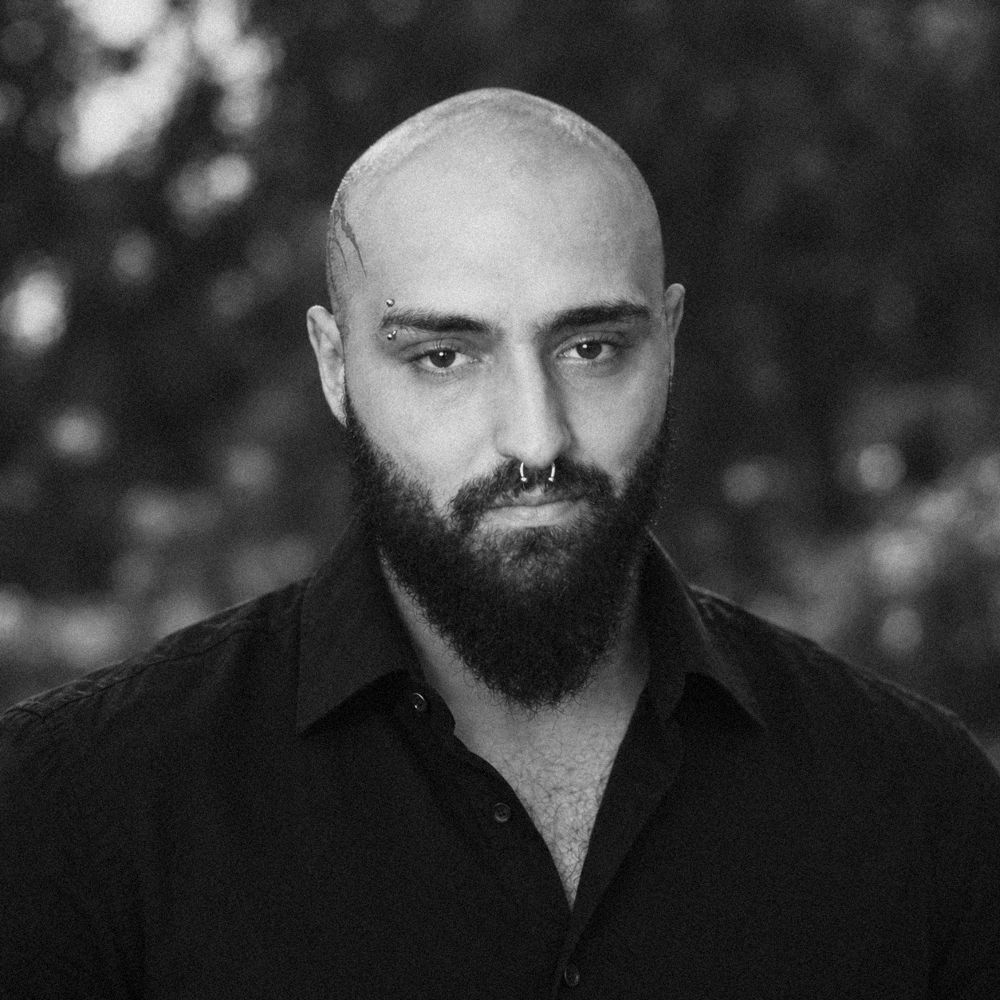

Bayfall Morrigan combines in-house quantitative research with an established structure of advisory relationships built over decades.
Our senior advisor’s long career in corporate finance, real assets, and commodities produced deep experience alongside prominent principals, and that experience shapes how we approach relationships and agreements. Aaron Greyling manages the firm’s external relationships.
01Founder | Chief Executive Officer
I’m Aidan Ronan, founder and CEO of Bayfall Morrigan. I oversee the firm’s research, model development, validation, and deployment.
Before entering the markets, I ran a consumer brand handling international contracts, cash flow, and fulfillment. Running that business taught me to be careful about assumptions, particularly when real money and other people’s commitments depended on them.
I later spent years as a discretionary trader focused on market microstructure. When I began converting my setups into fixed rules a computer could execute, I already understood the mechanics behind most of them. I learned quantitative methods to test those ideas, not to tell me what mattered.
That is still how I approach research. Before building a model, I want to understand why an inefficiency should exist and what might cause it to persist. I don’t start with a pattern and work backward to justify it.
Bayfall Morrigan was not built in spare hours. There were no spare hours. I want to build something worth inheriting, even by people who may never know what it took to get started.

02Co-Founder | Head of Relations
Our senior advisor is my grandfather. My family has been involved in private ventures across several continents for five decades. I grew up around the people responsible for those businesses and became involved in their work at an early age.
I learned much of what I know about agreements by being part of the conversations that led to them. The written terms matter, but understanding the people involved matters just as much. What someone says they want and what they are actually trying to achieve are often different things. I’ve spent much of my life learning to recognize that difference.
At Bayfall Morrigan, I maintain and curate the firm’s relationships. The relationships I grew up around were built long before I was. How I carry them forward is my responsibility.